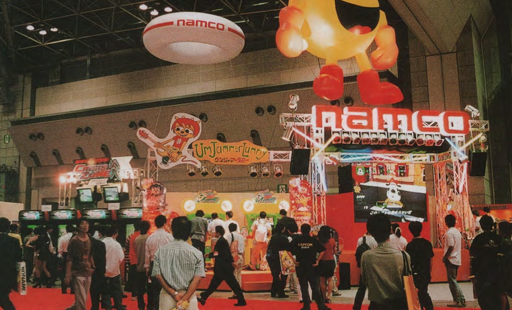
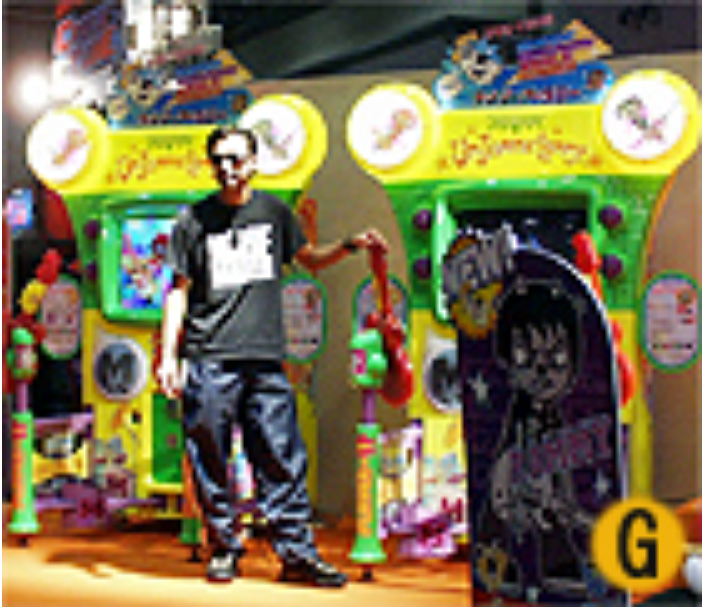
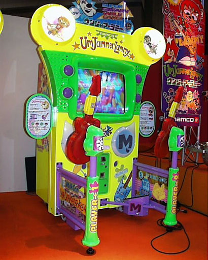
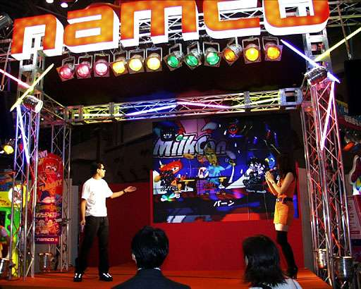

★ JAMMA AM SHOW 1999 - NAMCO ★★ JAMMA AMショー1999 - ナムコ ★
— JAMMA AM SHOW 1999 - NAMCO BOOTH —— JAMMA AMショー1999 - ナムコブース —

The footage above was captured at the Um Jammer Lammy exhibit on the show floor. Namco brought its new music-game lineup to the Amusement Machine Show (AM Show), the annual arcade trade show organised by JAMMA, in September 1999. This is where the arcade version of Um Jammer Lammy — still listed under the provisional title 『ウンジャマ・ラミー（仮称）』 — was shown to operators, three months before it reached amusement centres in December 1999 as Um Jammer Lammy NOW!. Two Guitar'n'Table cabinets stood on the show floor beneath a hanging Lammy sign, next to Million Hits and Quest for Fame. Lammy and PaRappa mascot costumes worked the booth, and MilkCan played on the giant stage screen. The magazine reports below date their coverage to the show's opening day, September 9, 1999.上の映像は、会場に設けられたウンジャマ・ラミーの展示の様子を捉えたものです。ナムコは1999年9月、JAMMAが主催するアーケード業界の見本市「アミューズメントマシンショー（AMショー）」に新作音楽ゲームのラインナップを出展しました。アーケード版『ウンジャマ・ラミー』は、この時点ではまだ『ウンジャマ・ラミー（仮称）』として業界関係者に披露され、3か月後の1999年12月に『ウンジャマ・ラミー NOW!』としてアミューズメント施設で稼働を開始しました。会場ではラミーの吊り看板の下にギターンテーブル筐体2台が並び、隣には『ミリオンヒッツ』と『クエスト フォー フェイム』が展示。ラミーとパラッパの着ぐるみがブースを盛り上げ、ステージの大型スクリーンにはMilkCanが登場しました。下の雑誌記事は、初日の1999年9月9日に取材されたものです。
— BOOTH PHOTOS —— ブース写真 —

Twin cabinets with Lammy standee筐体2台とラミーの等身大パネル

Cabinet — three-quarter view筐体（斜め正面）

MilkCan stage showMilkCan ステージショー
PaRappa mascot on the Namco stageナムコステージのパラッパ着ぐるみ
Crowd at the twin cabinets筐体2台に集まる来場者
Cabinet close-up — screen surround, "How to Play" card and guitar controller (hi-ho.ne.jp)筐体のアップ — 画面まわり、遊び方カード、ギターコントローラー（hi-ho.ne.jp）
Crisis Zone cabinets beside an Um Jammer Lammy banner (hi-ho.ne.jp)ウンジャマ・ラミーの垂れ幕の隣に並ぶクライシスゾーン筐体（hi-ho.ne.jp）
— MAGAZINE REPORTS —— 雑誌レポート —
AM Show 1999/09/09 report — player at the cabinetAMショー 1999/09/09 レポート — 筐体でプレイ中
Lammy mascot at the Namco booth — music game lineup write-upナムコブースのラミー着ぐるみ — 音楽ゲーム紹介記事
Players at the Namco boothナムコブースでプレイ中
Game Machine, October 15, 1999 — players at the twin cabinetsゲームマシン 1999年10月15日号 — 筐体2台でプレイする来場者
Game Machine, October 15, 1999 — PaRappa and Lammy mascots on the Namco stageゲームマシン 1999年10月15日号 — ナムコステージのパラッパとラミーの着ぐるみ
Game Machine, October 15, 1999 — Crisis Zone cabinets at the Namco boothゲームマシン 1999年10月15日号 — ナムコブースのクライシスゾーン筐体
Game Machine, September 15, 1999 — AM Show '99 floor plan (as of August 5), East Halls 4–6, Tokyo Big Sight, September 9–12. Namco's booth sits between Sega and SNK.ゲームマシン 1999年9月15日号 — AMショー'99 小間配置（8月5日現在）、東京ビッグサイト東4〜6ホール、9月9日〜12日。ナムコのブースはセガとSNKの間。
— SOFTBANK GAMES NEWS REPORT —— ソフトバンク ゲームニュース記事 —
SoftBank Games News, September 9, 1999 — "Highlights of the Namco booth are Um Jammer Lammy and Crisis Zone" (shown machine-translated into English)ソフトバンク ゲームニュース 1999年9月9日 — 「ナムコブースの目玉は『ウンジャマ・ラミー』と『クライシスゾーン』」（英語の機械翻訳で表示）
Article photo — posing on stage between the twin cabinets記事の写真 — ステージ上の筐体2台の間でポーズ
The same photo, enlarged — with the "NEW!" Lammy standee at right同じ写真の拡大 — 右に「NEW!」のラミー等身大パネル
Article photo — Crisis Zone, the booth's other highlight記事の写真 — ブースのもう一つの目玉、クライシスゾーン
— VIDEOS —— 動画 —
Gameplus footage from the 37th AM Show.第37回AMショーのGameplusによる映像。
A Cantonese-language report on the arcade Um Jammer Lammy at the 37th AM Show. Translation: "The PS version came out way before the arcade version, and the gameplay is basically the same. You just watch the screen and press the corresponding buttons. Although the computer will demonstrate first, it's not really that easy to play. As for the songs, besides having all the ones from the PS version, there will also be new ones. As for the controller, it's a really cute little guitar, though it does look a bit weird. Speaking of which, I wonder if they'll release a home console version next time, since they've already put out an arcade version."第37回AMショーのアーケード版ウンジャマ・ラミーを紹介する広東語のレポート。訳：「PS版はアーケード版よりずっと前に発売されていて、遊び方は基本的に同じ。画面を見ながら対応するボタンを押すだけ。最初にコンピューターが手本を見せてくれるけど、実際はそんなに簡単じゃない。曲はPS版の曲が全部入っているうえに、新曲もあるそう。コントローラーはとってもかわいい小さなギターだけど、ちょっと変わった見た目でもある。そういえば、アーケード版が出たんだから、次の続編は家庭用で出るのかな？」